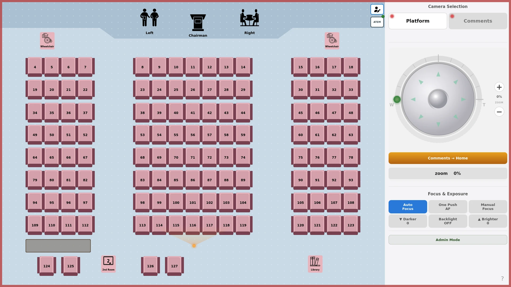

Check the session
Confirm the selected camera and the on-screen session state. Keep one controller process connected to each camera; competing tools can displace a camera's connection.
For room operators: use a seat map to recall saved framing on one or two VISCA-over-IP cameras. Runs on your Raspberry Pi desktop and local network.
Target hardware validation is still pending. Rehearse on your equipment before live use.
Prepare to install Explore the source
Check the equipment, run readiness checks and follow the first-run wizard.
Installation path ↓OPERATORCheck the camera and session, use CALL, and know how to stop.
Operator path ↓MAINTENANCECheck reconnecting cameras, failed saves and unavailable ATEM controls safely.
Troubleshooting path ↓Install outside a live event. Choose a reviewed, CI-green release candidate or approved commit, and keep a record of the version you install.
sudo raspi-config and reboot before installation.Pi 4 / Bullseye with Python 3.9.2 remains a legacy baseline. Trixie is not validated. Camera compatibility must be checked on the actual model.
Full Raspberry Pi installation guide ↗Use the exact tag or full commit SHA approved for your installation, not the latest main.
git clone https://github.com/HALCONDEORO/kh-ptz-control.git khptz
cd khptz
read -r -p "Approved tag or full commit SHA: " APPROVED_REVISION &&
git checkout --detach "$APPROVED_REVISION" &&
git rev-parse HEAD &&
bash install_khptz_rpi.sh --guideDo not continue if checkout fails or the displayed SHA is not the approved build. Read the guide before proceeding.
Run as your existing desktop user. --wizard-user must name that user, not the service account. Keep the same terminal open.
sudo bash install_khptz_rpi.sh --wizard-user "$USER" --checkIf it fails, stop and follow the reported next step.
Use the same desktop user and terminal:
sudo bash install_khptz_rpi.sh --wizard-user "$USER"Follow the installer output: reboot and log into the desktop, or run khptz setup there. The first-run wizard collects room details, camera addresses and login settings. Do not use a default password.
Expected result at each stage. Stop at a failed check rather than skipping ahead.
A green connection indicator describes transport, not proof that a camera moved or saved its position. Watch the camera result, especially during setup.
Confirm the selected camera and the on-screen session state. Keep one controller process connected to each camera; competing tools can displace a camera's connection.
Use CALL for saved positions. Use the joystick and zoom to adjust framing. SET can overwrite camera memory: use the required role and confirmation, away from a live event.
The main STOP ALL button is ADMIN-only. USER can open the quiet ? below Admin Mode for offline guides and STOP BOTH CAMERAS without confirmation. Opening Help sends no commands. Releasing the joystick requests a stop for the camera it was moving, not all cameras. Rehearse the red STOP ALL button in ADMIN mode and confirm the physical result. Keep a physical fallback available without a password. Safety Reset is a service contract, not a verified GUI control.
Historical UI states. Captured 10 November 2026, before the ADMIN-only STOP ALL button was added. Local simulation. No physical camera test. Press play to see four captured application states; playback never starts automatically.
This is a sequence of real MainWindow screenshots with injected UI states, not a recording of camera motion. Connection and power indicators are simulated. It does not demonstrate CALL, SET, STOP delivery or physical recovery.
Test outside a live session. Record the installed version and preserve logs before changing configuration or retrying a failed save.
Check power and network reachability, the selected camera and its configuration. Close competing controllers or network probes before retrying. Do not assume transport recovery means saved framing is correct.
A timeout is not success. Preserve the data and backups before saving again. Camera preset memory is separate from the app's seating layout and name-to-slot files.
That is expected until the switcher is verified. An administrator can check its IP and diagnostics in Settings. Confirm optional dependencies and licence gates before adding them.
Start with khptz version and khptz status. Follow the install guide for khptz doctor and khptz verify-install. Stop the GUI before standalone camera diagnostics; a second client can disrupt camera connections. Keep backups off the device and out of public issues.
The repository includes simulation helpers for isolated UI rehearsal. They are not a full equipment test, and some helpers change local configuration. Use a disposable development checkout, never a live installation. Simulation does not prove physical motion, STOP delivery or camera compatibility.
No. Layout and name-to-slot files are app data; the actual preset positions are stored in camera memory. Keep app backups, and verify each camera's positions separately.
They appear only after the configured switcher connects and a valid program read is verified. This does not block normal PTZ operation. An administrator can still inspect configuration and diagnostics in Settings.
It does not guarantee compatibility with every VISCA camera, confirm physical motion from a green indicator, make a disconnected camera stop, or replace a physical rehearsal and the venue's fallback. The screenshot is a simulation, not a hardware certification.
ATEM support connects camera operation with the video switcher. Operational controls stay hidden until the configured switcher is connected and a valid program read has been verified.
Manual switching and automation have separate role and safety rules. Keep automatic switching disabled until its own safety review passes. Missing optional ATEM support must not stop normal PTZ operation.
ATEM setup and validation ↗The application separates presentation, product rules and hardware. These are the intended architecture boundaries; legacy code is still being brought into line with them.
PyQt windows and widgets present camera state and operator actions.
ui/Use cases, preset rules and models sit behind the public command API.
application/ · domain/ · ports/Adapters, VISCA workers, diagnostics and installation connect the app to equipment.
adapters/ · ptz/visca/ · runtime/